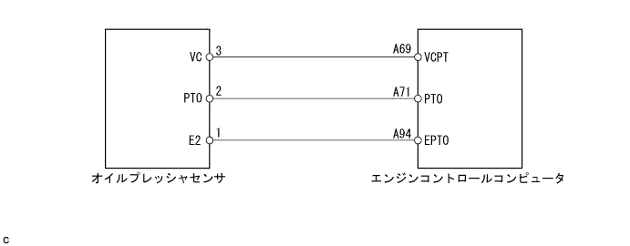

DTC P0841/C8 Belt Clamping Pressure Sensor Circuit (Function Check) |
DTC P2829/77 SLS Solenoid Circuit (Functional Malfunction) |
| DTC No. SAE/TCCS | DTC Detection Condition 1. Diagnosis Condition 2. Malfunction Status 3. Malfunction Duration 4. Other | Inspection Area |
|---|---|---|
| P0841/C8 |
|
|
| P2829/77 |
| |
|

| Step 1 | Check DTC |
Connect SST (TaSCAN) to DLC3.
Turn the IG ON and read the DTCs following the SST (TaSCAN) screen display.
| Result | Proceed to |
|---|---|
| P0841/C8 and P2829/77 are output | A |
| Codes other than P0841/C8 and P2829/77 are also output | B |
|
| ||||
| A | |
| Step 2 | Inspect Hydraulic Pressure (Belt Clamping Pressure) |
Apply the parking brake and chock the wheels.
Connect SST (TaSCAN) to DLC3 and turn the power ON.
Following SST (TaSCAN), select [Active Test] -> [TC Terminal ON], and display [ECU Data Monitor] -> [AT Hydraulic Pressure] and [Engine Speed].
Perform the Active Test (TC terminal ON condition), depress the brake pedal firmly with the left foot, and inspect the hydraulic pressure at idle speed (N position) and at stall speed (D position).
| Item Name [Symbol] | Item Description Display Range | Standard Value | Remarks |
|---|---|---|---|
| A/T Oil Pressure [THO] | Indicates CVT hydraulic pressure Display range: -64 to 63.998MPa | N position At idle 0.2 to 0.8MPa | - |
| Indicates CVT hydraulic pressure Display range: -64 to 63.998MPa | D position At stall 4.44 to 5.07MPa | - |
| AT hydraulic pressure value | Inspection Result | Proceed to |
|---|---|---|
| NG | AT hydraulic pressure (belt clamping pressure) is high | A |
| OK | AT hydraulic pressure (belt clamping pressure) is within standard range | B |
|
| ||||
| A | |
| Step 3 | Replace Oil Pressure Sensor |
for reference.| NEXT | |
| Step 4 | Clear DTC |
Connect SST (TaSCAN) to DLC3.
Turn the IG ON and clear the DTCs following the SST (TaSCAN) screen display.
| NEXT | |
| Step 5 | TaSCAN (A/T / CVT Learned Value Initialization, G Sensor 0-point Learning and CVT Hydraulic Pressure Learning) |
| Replacement Parts |
|
Using SST (TaSCAN), perform A/T/CVT learned value initialization, G sensor 0 point learning and CVT hydraulic pressure learning.
for reference.| NEXT | |
| Step 6 | Check DTC |
Connect SST (TaSCAN) to DLC3.
Turn the IG ON and read the DTCs following the SST (TaSCAN) screen display.
| Detection Result | Proceed to |
|---|---|
| P0841/C8 and P2829/77 are output | A |
| DTC is not output | B |
|
| ||||
| A | |
| Step 7 | Replace Engine Control Computer |
for reference.| NEXT | |
| Step 8 | TaSCAN (A/T / CVT Learned Value Initialization, G Sensor 0-point Learning and CVT Hydraulic Pressure Learning) |
| Replacement Parts |
|
Using SST (TaSCAN), perform A/T/CVT learned value initialization, G sensor 0 point learning and CVT hydraulic pressure learning.
for reference.| NEXT | |
| Step 9 | Check DTC |
Connect SST (TaSCAN) to DLC3.
Turn the IG ON and read the DTCs following the SST (TaSCAN) screen display.
| Detection Result | Proceed to |
|---|---|
| P0841/C8 and P2829/77 are output | A |
| DTC is not output | B |
|
| ||||
| A | |
| Step 10 | Replace Continuously Variable Transaxle |
for reference.| NEXT | |
| Step 11 | Clear DTC |
Connect SST (TaSCAN) to DLC3.
Turn the IG ON and clear the DTCs following the SST (TaSCAN) screen display.
| NEXT | |
| Step 12 | TaSCAN (A/T / CVT Learned Value Initialization, G Sensor 0-point Learning and CVT Hydraulic Pressure Learning) |
| Replacement Parts |
|
Using SST (TaSCAN), perform A/T/CVT learned value initialization, G sensor 0 point learning and CVT hydraulic pressure learning.
for reference.Check the DTCs again.
| NEXT | ||
| ||